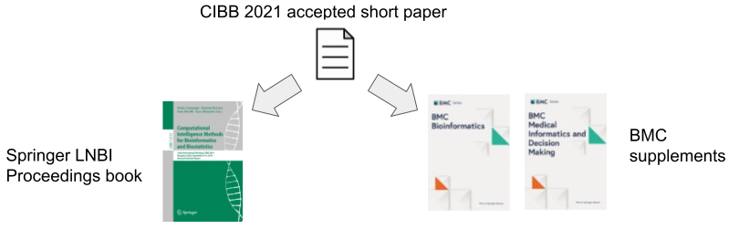

The publication of the accepted extended articles in the Springer LNBI will be free of charge for the authors, and the articles published will be non-open access. That means that readers, universities, and libraries will have to pay a subscription to read these articles. Springer LNBI is a subseries of Springer Lecture Notes in Computer Science (LNBI).
The publication of each accepted extended article in the BMC journal supplements, instead, will cost approximately 1,800€ to be paid by the article's authors to BioMed Central. The articles published in the BMC journals will then be open access and free to read for anyone in the world.
Regarding the BMC supplements, we expect all the extended articles to be proposed as "research" content type. If some authors think their article should be prepared following a different content type, they should get in touch with the conference chairs to discuss it.
The authors are allowed to post their extended articles on preprint servers such as arXiv, bioRxiv, and medRxiv before the submission to the Springer LNBI book or to the BMC journal supplements.
Article preparation guidelines:
- Springer LNBI/LNCS guidelines for authors
- BMC Bioinformatics guidelines for authors
- BMC Medical Informatics and Decision Making guidelines for authors

Deadlines
Submission of extended articles for the BMC supplements: 16 February 2022
Submission of extended articles for the Springer LNBI book: 30 March 2022
We will try handle the review phase of the extended articles submitted to the BMC supplements quickly so that any rejected manuscripts can be submitted to the Springer LNBI book, if the authors want it.
We will provide more instructions about the submission of these extended articles here soon.